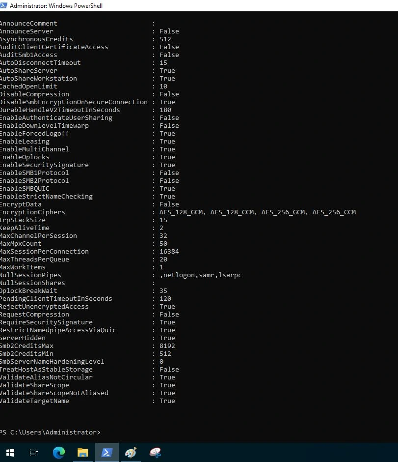
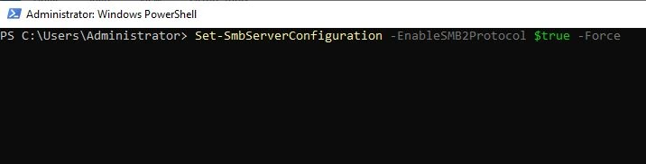
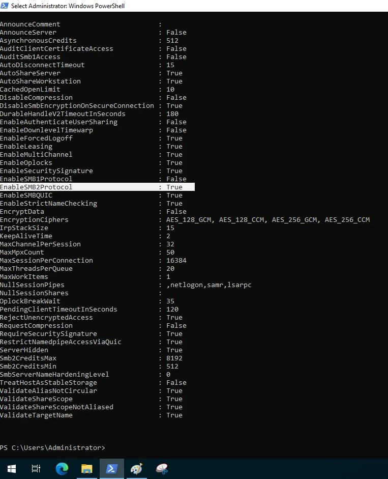
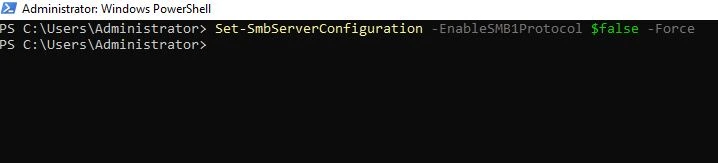
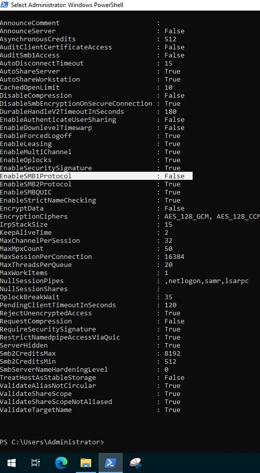
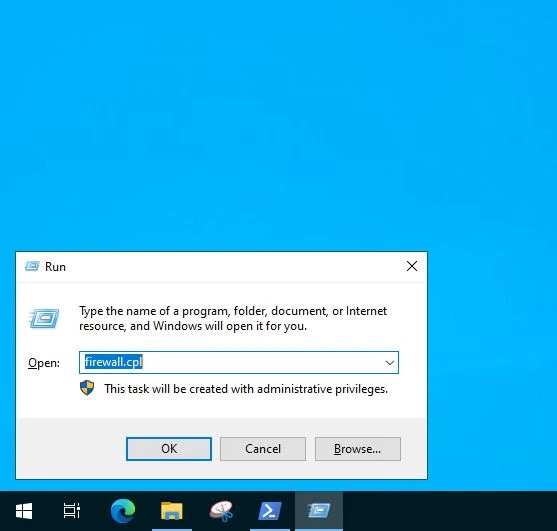
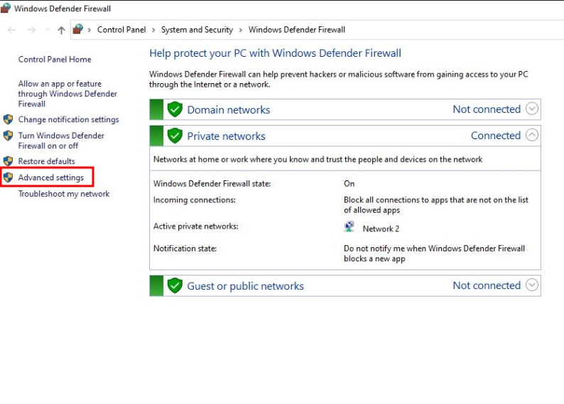
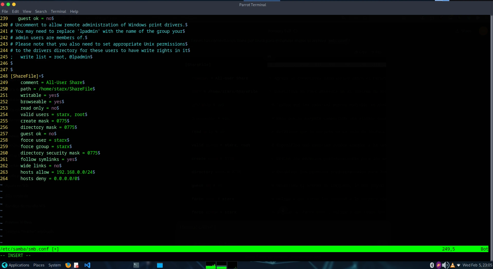

En esta publicación, configuraremos los ajustes necesarios para habilitar el compartimiento de archivos mediante el
protocolo SMB. La carpeta compartida, llamada "ShareFile", está alojada localmente en ParrotOS, y los equipos con Windows accederán
a ella para consultar y almacenar información.
Seguimos los siguientes pasos para la configuracion:
1.-
2.-
3.-

4.-

5.-

6.-

7.-

8.-

9.-

10.-
11.-
12.-

Explicacion de la configuracion de archivo /etc/samba/smb.conf
[ShareFile]: #Define el nombre del recurso compartido. Este será el nombre que aparecerá cuando otros usuarios
intenten acceder a la carpeta compartida.
comment = All-User Share: #Agrega un comentario descriptivo sobre el recurso compartido, que puede ser visible
cuando otros lo exploran.
path = /home/starx/ShareFile: #Especifica la ruta absoluta en el sistema de archivos del servidor donde se
encuentra la carpeta compartida.
writable = yes: #Indica que los usuarios pueden escribir en esta carpeta compartida, lo que permite agregar,
modificar y eliminar archivos.
browseable = yes: #Hace que la carpeta compartida sea visible cuando se explora el servidor SMB en una red.
read only = no: #Establece que la carpeta no es solo de lectura, permitiendo que los usuarios escriban y modifiquen archivos.
valid users = starx, root: #Especifica qué usuarios pueden acceder a la carpeta compartida. En este caso,
solo los usuarios `starx` y `root` tienen permiso.
create mask = 0775: #Define los permisos predeterminados para los archivos creados en esta carpeta compartida (en formato octal).
El valor `0775` permite permisos de lectura, escritura y ejecución al propietario y al grupo, y solo lectura y ejecución a otros.
directory mask = 0775: # Establece los permisos predeterminados para los directorios creados dentro de la carpeta compartida,
con los mismos permisos que para los archivos.
guest ok = no: # Desactiva el acceso de invitado, lo que significa que solo los usuarios definidos pueden acceder
a la carpeta compartida.
force user = starx: #Obliga a que todos los accesos a la carpeta compartida se realicen bajo el usuario `starx`,
independientemente de quién se autentique.
force group = starx: #Similar a `force user`, obliga a que todos los archivos y directorios en la carpeta compartida
pertenezcan al grupo `starx`.
directory security mask = 0775: #Similar a `create mask`, pero se aplica específicamente a la creación de directorios
dentro de la carpeta compartida, con permisos de lectura, escritura y ejecución para el propietario y el grupo.
follow symlinks = yes: #Permite seguir los enlaces simbólicos dentro de la carpeta compartida. Los enlaces simbólicos
apuntarán a los archivos o directorios originales en el sistema.
wide links = no: #Desactiva el uso de enlaces simbólicos que apunten a ubicaciones fuera de la carpeta compartida, lo
que ayuda a evitar problemas de seguridad.
hosts allow = 192.168.0.0/24: #Permite el acceso solo desde las direcciones IP dentro de la subred 192.168.0.0/24.
Esto restringe el acceso a ciertos dispositivos de la red local.
hosts deny = 0.0.0.0/0: #Bloquea el acceso desde cualquier otra dirección IP que no esté especificada en `hosts allow`.
Este es un mecanismo de seguridad para garantizar que solo las máquinas en la subred permitida puedan acceder.